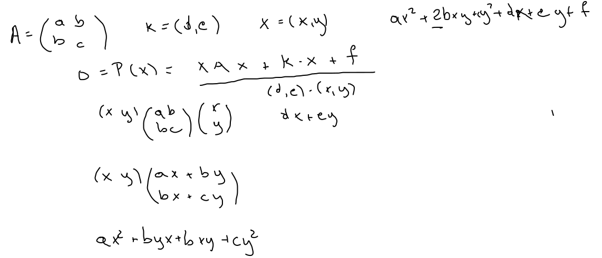
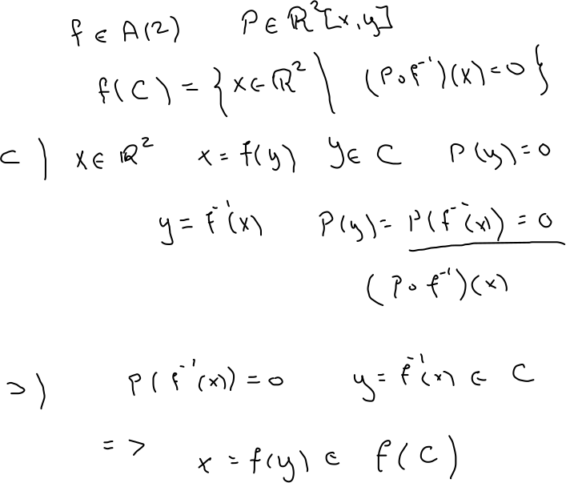
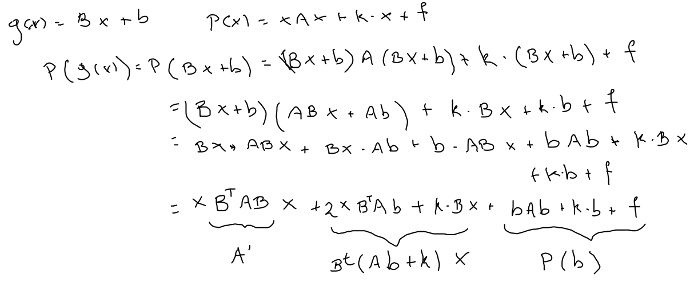

Una sola clase de triángulos bajo transformaciones afines
Semejanza
Congruencia
Curvas cuadráticas
Dado un polinomio de segundo grado en dos variables P(x,y)=ax2+2bxy+cy2+dx+ey+f, con a,b,c,d,e,f∈R, define una curva cuadrática asociada C(P)={(x,y)∈R2∣P(x,y)=0}, la condición puede ser reescrita xAx+k⋅x+f=0, donde A=(abbc), x=(x,y) y k=(d,e).
 Clases Las curvas cuadráticas canónicas son
x2+y2−1circulo unitario.
x2−y2−1hipérbola unitaria.
x2−yparábola canónica.
x2+y2+1circulo (imaginario).
x2−y2par de rectas.
x2+y2círculo (rectas imaginarias).
x2−1rectas paralelas.
x2+1rectas imaginarias.
x2recta doble.
Dada f∈A(2), la imagen de la curva C bajo f, está dada por
f[C]={x∈R2∣(P∘f−1)(x)=0}
 Afirmaciónf[C] es una curva cuadrática.
(P∘g)x=x(BTAB)x+2BT(Ab+k)⋅x+P(b), donde g=Tb∘B.
 Teorema Dado un polinomio cuadrático en dos variables P, es afinmente equivalente a uno y solo una de las curvas cuadrática canónicas.